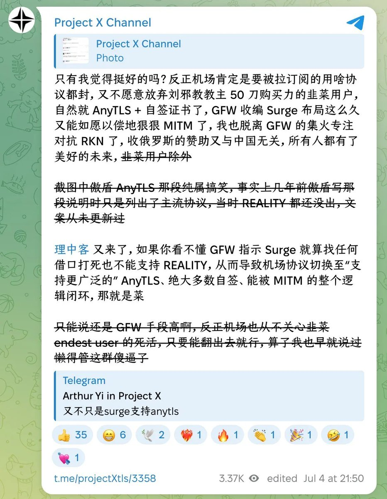
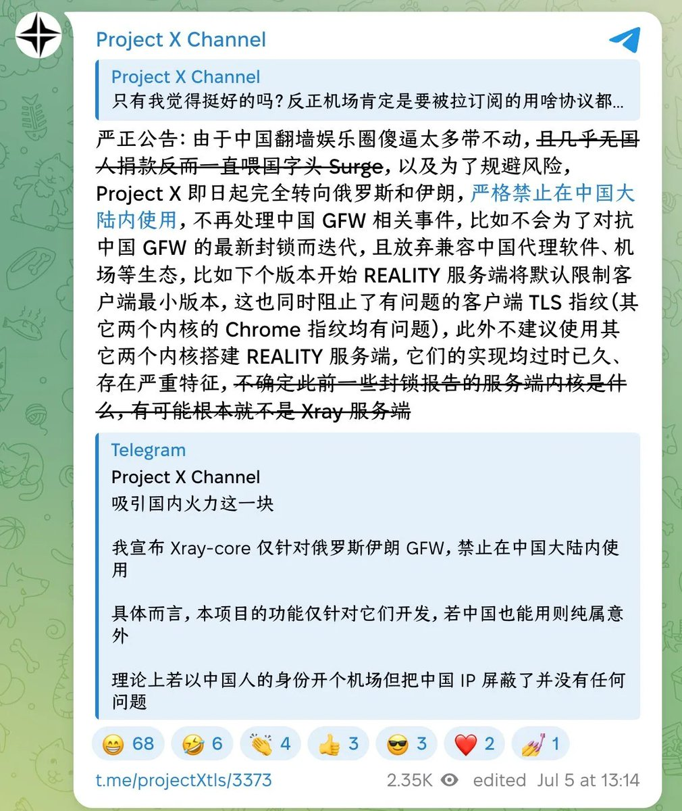
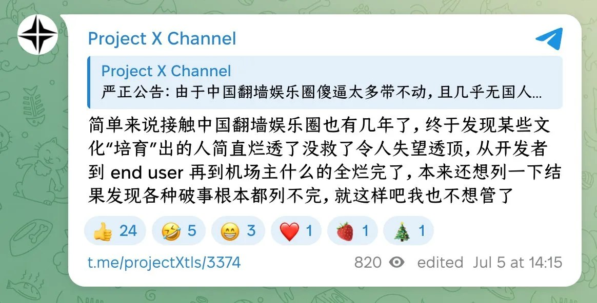

不是所有的中国朋友都是很坏的人 也有很好的很可爱的人…只是…没有素质的占大多数 而且很喜欢刷存在感
Project X也确实是注意到这些人做的事丢人 受不了了最终表态了 唉
这些坏蛋真是作妖啊

Project X也确实是注意到这些人做的事丢人 受不了了最终表态了 唉
这些坏蛋真是作妖啊



反封锁项目 Project X 宣布切割中国大陆：不再为 GFW 更新，转向俄罗斯和伊朗
近日，反封锁开源项目 Project X 在 Telegram 频道连续发文，引发翻墙圈关注。
该频道公告称，由于“中国翻墙娱乐圈”问题太多、风险过高，Project X 将“完全转向俄罗斯和伊朗”，并“严格禁止在中国大陆内使用”。 https://t.co/1gXFAF6HO5 https://t.co/ovJH3uQhTe
近日，反封锁开源项目 Project X 在 Telegram 频道连续发文，引发翻墙圈关注。
该频道公告称，由于“中国翻墙娱乐圈”问题太多、风险过高，Project X 将“完全转向俄罗斯和伊朗”，并“严格禁止在中国大陆内使用”。 https://t.co/1gXFAF6HO5 https://t.co/ovJH3uQhTe